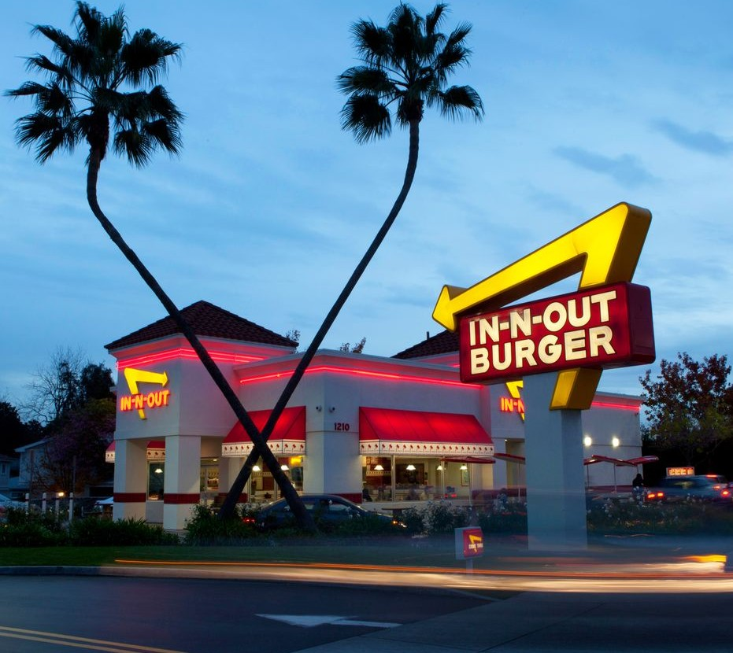

In 1948, Harry and Esther Snyder opened the first
In-N-Out Burger.
They served the freshest burgers, fries, and drinks in a friendly,
sparkling-clean atmosphere. And the times, well, they have not changed at
In-N-Out.
The menu is still the same basic menu our guests have enjoyed since 1948.
And we've been serving everything up the same exact way:
fresh, made to order and with only the highest quality ingredients.
Tap the button above to view the entire history of In-N-Out Burger,
from the first store to modern day events.
